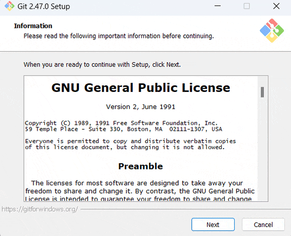

Instalação do Visual Studio Code
Antes de instalar o Git, vamos instalar o Visual Studio Code, um poderoso editor de código que se integra bem com o Git. Siga as instruções abaixo para o seu sistema operacional:
Windows, macOS e Linux
- Acesse o site oficial do Visual Studio Code: https://code.visualstudio.com/
- Clique no botão de download para o seu sistema operacional.
- Execute o instalador baixado e siga as instruções na tela.
- Após a instalação, abra o Visual Studio Code para verificar se foi instalado corretamente.
O Visual Studio Code oferece excelente integração com o Git, incluindo:
- Visualização de alterações em arquivos
- Staging e commit de alterações diretamente da interface
- Visualização de histórico de commits
- Resolução de conflitos de merge
- Integração com GitHub e outros serviços de hospedagem de repositórios
Instalação do Git
Agora que temos o Visual Studio Code instalado, vamos instalar o Git. Siga as instruções abaixo para o seu sistema operacional:

Demonstração do processo de instalação do Git
Windows
- Acesse o site oficial do Git: Git para Windows
- Baixe o instalador e execute-o.
- Siga as instruções do instalador, mantendo as opções padrão.
- Após a instalação, abra o Visual Studio Code, pressione Ctrl+` para abrir o terminal integrado e digite
git --versionpara verificar se a instalação foi bem-sucedida.
macOS
- Abra o Terminal no Visual Studio Code (Ctrl+`).
- Instale o Homebrew (se ainda não tiver) com o seguinte comando:
/bin/bash -c "$(curl -fsSL https://raw.githubusercontent.com/Homebrew/install/HEAD/install.sh)" - Após a instalação do Homebrew, instale o Git com o comando:
brew install git - Verifique a instalação digitando
git --versionno Terminal do VS Code.
Linux (Ubuntu/Debian)
- Abra o Terminal no Visual Studio Code (Ctrl+`).
- Atualize os pacotes do sistema:
sudo apt update - Instale o Git:
sudo apt install git - Verifique a instalação digitando
git --versionno Terminal do VS Code.
Configurando o Git no Visual Studio Code
Após instalar o Git, o Visual Studio Code detectará automaticamente a instalação. Para começar a usar o Git no VS Code:
- Abra um projeto ou pasta no VS Code.
- Clique no ícone de controle de versão na barra lateral esquerda (ícone de ramificação).
- Clique em "Initialize Repository" para iniciar um novo repositório Git, ou use os comandos Git diretamente no terminal integrado.
Agora você está pronto para usar o Git com o Visual Studio Code!